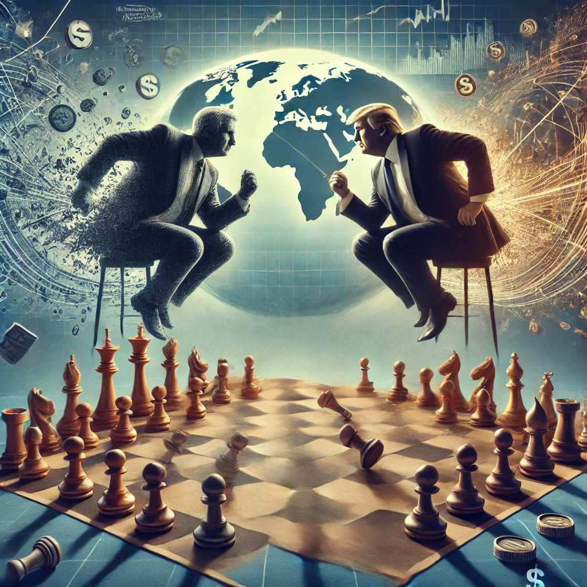

2025-03-19 21:37:51

Trump, ao contrário do que tenta vender aos seus seguidores, não é um estratega genial nem um grande negociador, mas sim um oportunista impulsivo, sem visão de longo prazo. Ele pode ser um jogador agressivo de damas, reagindo ao momento e criando caos, mas quando o jogo exige paciência, análise e antecipação de jogadas, ele perde-se completamente.
A imagem de Trump como um empresário de sucesso é uma ilusão cuidadosamente construída. A verdade é que:
Trump não construiu um império – ele destruiu um após o outro e sempre encontrou uma forma de escapar. Agora, faz o mesmo com os EUA.
Muitos dos seus apoiantes acreditam que ele joga um “xadrez 4D”, antecipando jogadas e enganando os adversários. Na verdade, Trump age por impulso, sem qualquer estratégia a longo prazo.
❌ Política Externa Caótica – Trump elogiou ditadores como Putin, Kim Jong-un e Xi Jinping, enquanto atacava aliados históricos. O resultado? Os EUA perderam influência global e a China fortaleceu-se.
❌ A Guerra Comercial com a China – Impôs tarifas que acabaram por prejudicar mais a economia americana do que a chinesa. As empresas americanas pagaram a conta e os consumidores sofreram com a inflação.
❌ A Destruição da Aliança Transatlântica – Com ataques constantes à NATO e à União Europeia, Trump ajudou a Rússia a expandir sua influência e forçou os europeus a pensar num futuro sem depender dos EUA.
❌ Fracasso na Economia – Sua promessa de crescimento ilimitado revelou-se uma mentira. As políticas económicas erráticas, somadas a cortes fiscais para bilionários e tarifas mal calculadas, desestabilizaram os mercados e afundaram o dólar.
Ao invés de seguir uma estratégia racional, Trump governa como um rei vingativo, baseado em humores e ressentimentos.
O resultado? Uma administração caótica, onde decisões são revertidas de um dia para o outro conforme o que ele vê na TV ou lê no Twitter.
O maior problema de Trump é que o mundo não funciona como um reality show ou uma negociação imobiliária.
Ele pode ter ganho eleições enganando eleitores com frases de efeito, mas a realidade não se dobra à sua vontade.
Os EUA já começam a pagar um preço alto pelo seu amadorismo e impulsividade:
Se há um líder global que não entende o tabuleiro onde está a jogar, esse líder é Donald Trump.
Créditos para IA e DeepSeek (c)